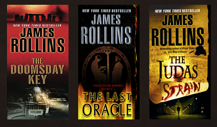

Deep into Coding
December, 2017
My days are filled with JavaScript, HTML and CSS. The first week was mainly
review for me, but I learned from others' insights and questions. Now I'm
learning new things - and finally clearing up some things that I'd encountered
but hadn't understood before.
Integer vel ex ac purus rhoncus imperdiet in a est. Nulla sagittis pretium tortor, at finibus felis pretium id. Aliquam ut massa sit amet quam porta hendrerit. Vestibulum fringilla nunc eget purus commodo lobortis. Nulla laoreet fringilla erat, eu ullamcorper enim sollicitudin quis. Donec vitae egestas elit. In consequat euismod iaculis. Vivamus faucibus efficitur erat eget consectetur. Suspendisse eleifend massa quis iaculis commodo. Integer blandit justo nec erat commodo vehicula. Mauris a nibh scelerisque, lacinia quam sed, varius libero.
Maecenas dapibus, dolor vel mollis pulvinar, lectus erat eleifend libero, non accumsan est ipsum sed risus. Maecenas cursus lectus mauris, ut vestibulum enim euismod nec. Suspendisse et congue elit, dictum convallis velit. Donec iaculis odio urna, sit amet facilisis justo pharetra ut. Cras quis eros auctor, consequat nisl eget, bibendum nisi. Nam libero dolor, congue at odio vitae, volutpat sagittis purus. Nullam orci tortor, malesuada non ex eget, finibus condimentum ex. Integer porta posuere lorem, at luctus mi dignissim eu. Nunc consequat ipsum erat, sed convallis arcu vestibulum ut. Maecenas non tempus neque, et placerat velit. Nam vitae pellentesque dolor. Aliquam erat volutpat. Phasellus aliquet nulla est, sed dapibus nibh tristique egestas.
Cross-Country Drive
November, 2017
I drove from Pennsylvania to Utah to attend coding bootcamp at
V School, staying on Route 80 all the way. The flatlands began in Ohio
and continued through Indiana, Illinois, Iowa and Nebraska. I was already in the Rocky
Mountains in Wyoming before I realized it. The inclines are gentle for the most part,
so it made for easy driving. There was the threat of I-80 being closed to high winds,
and they did get high enough that signs along the road warned of 40+ mph winds, so I stopped
early, in Laramie. Things were calm the next morning. Utah turned out to be the hardest
leg of the trip, as the sun was directly in front of me and the inclines got steep.
I only wish I'd had more time to stop and see some sights, especially Fort Laramie
and Fort Bridger in Wyoming (old Oregon Trail fan here).
Integer vel ex ac purus rhoncus imperdiet in a est. Nulla sagittis pretium tortor, at finibus felis pretium id. Aliquam ut massa sit amet quam porta hendrerit. Vestibulum fringilla nunc eget purus commodo lobortis. Nulla laoreet fringilla erat, eu ullamcorper enim sollicitudin quis. Donec vitae egestas elit. In consequat euismod iaculis. Vivamus faucibus efficitur erat eget consectetur. Suspendisse eleifend massa quis iaculis commodo. Integer blandit justo nec erat commodo vehicula. Mauris a nibh scelerisque, lacinia quam sed, varius libero.
Maecenas dapibus, dolor vel mollis pulvinar, lectus erat eleifend libero, non accumsan est ipsum sed risus. Maecenas cursus lectus mauris, ut vestibulum enim euismod nec. Suspendisse et congue elit, dictum convallis velit. Donec iaculis odio urna, sit amet facilisis justo pharetra ut. Cras quis eros auctor, consequat nisl eget, bibendum nisi. Nam libero dolor, congue at odio vitae, volutpat sagittis purus. Nullam orci tortor, malesuada non ex eget, finibus condimentum ex. Integer porta posuere lorem, at luctus mi dignissim eu. Nunc consequat ipsum erat, sed convallis arcu vestibulum ut. Maecenas non tempus neque, et placerat velit. Nam vitae pellentesque dolor. Aliquam erat volutpat. Phasellus aliquet nulla est, sed dapibus nibh tristique egestas.
Reading Thrillers
October, 2017

I have discovered James Rollins's books and have read five of them,
one after the other. Rollins's books are not just fast-paced action-
adventure; they bring together fascinating, little-known aspects
of science and history to create thought-provoking stories. Check out
The Last Oracle and The Devil Colony.
Integer vel ex ac purus rhoncus imperdiet in a est. Nulla sagittis pretium tortor, at finibus felis pretium id. Aliquam ut massa sit amet quam porta hendrerit. Vestibulum fringilla nunc eget purus commodo lobortis. Nulla laoreet fringilla erat, eu ullamcorper enim sollicitudin quis. Donec vitae egestas elit. In consequat euismod iaculis. Vivamus faucibus efficitur erat eget consectetur. Suspendisse eleifend massa quis iaculis commodo. Integer blandit justo nec erat commodo vehicula. Mauris a nibh scelerisque, lacinia quam sed, varius libero.
Maecenas dapibus, dolor vel mollis pulvinar, lectus erat eleifend libero, non accumsan est ipsum sed risus. Maecenas cursus lectus mauris, ut vestibulum enim euismod nec. Suspendisse et congue elit, dictum convallis velit. Donec iaculis odio urna, sit amet facilisis justo pharetra ut. Cras quis eros auctor, consequat nisl eget, bibendum nisi. Nam libero dolor, congue at odio vitae, volutpat sagittis purus. Nullam orci tortor, malesuada non ex eget, finibus condimentum ex. Integer porta posuere lorem, at luctus mi dignissim eu. Nunc consequat ipsum erat, sed convallis arcu vestibulum ut. Maecenas non tempus neque, et placerat velit. Nam vitae pellentesque dolor. Aliquam erat volutpat. Phasellus aliquet nulla est, sed dapibus nibh tristique egestas.